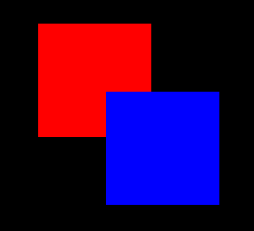
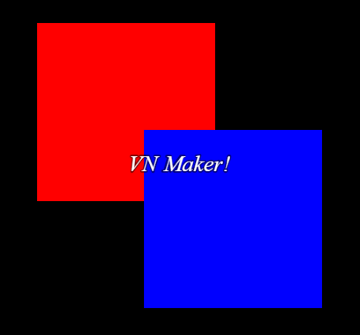

位图基础
位图基础I
n this chapter we will learn more about bitmaps and also how to display a text on screen.
As we learned in the chapters before, a bitmap object is just storing the image data without any knowledge about how to display itself on screen. But it also allows us to manipulate the image data by using its draw- and fill methods to draw colored shapes, other bitmaps and text on it. You can imagine a bitmap object
like a sheet of paper where you can freely draw on. Of course you cannot draw beyond the bounds of the paper sheet, same for bitmaps.
绘制简单形状
We will start very simple by creating an in-memory bitmap, means a bitmap which is not loaded from disk, with a size of 400x400 pixels and draw two colored overlapping squares on it.
###* * 为场景准备所有视觉游戏对象。 ### prepareVisual: -> # 创建一个新的内存位图 @bitmap = new gs.Bitmap(400, 400) # 在位图的左上角绘制一个红色正方形，大小为 250x250 像素。 @bitmap.fillRect(0, 0, 250, 250, new gs.Color(255, 0, 0)) # 从像素 150, 150 开始绘制一个蓝色正方形，大小为 250x250 像素。 @bitmap.fillRect(150, 150, 250, 250, new gs.Color(0, 0, 255)) # 创建一个新的 Sprite 对象以在屏幕上显示我们的位图。 @sprite = new gs.Sprite(Graphics.viewport) # 将我们的位图分配给 Sprite 以在屏幕上显示 @sprite.bitmap = @bitmap # 设置屏幕上的位置。我们使其居中。 @sprite.x = (Graphics.width - @bitmap.width) / 2 @sprite.y = (Graphics.height - @bitmap.height) / 2 # 定义我们要显示在屏幕上的位图部分。 @sprite.srcRect = new gs.Rect(0, 0, @bitmap.width, @bitmap.height) # 我们已经完成了准备视觉对象。所以我们可以开始 # 屏幕过渡，使我们新创建的对象平滑地淡入。 @transition() ###* * 准备场景的所有数据并加载必要的图形和音频资源。 ### prepareData: -> # 我们在这里不需要做任何事情，因为我们的位图是在内存中创建的，而不是 # 这次从磁盘加载。我们只需要更改 prepareVisual 方法来创建我们的内存位图，然后像在显示图片
章节中一样创建一个 Sprite 来在屏幕上显示位图。这次我们可以将 prepareData 留空，因为我们不需要加载任何东西或准备任何游戏数据。

如果我们现在开始游戏，我们将在屏幕中央看到两个重叠的彩色正方形。
绘制文本
接下来，我们想做一些更有趣的事情：让我们在位图上绘制文本！
###* * 为场景准备所有视觉游戏对象。 ### prepareVisual: -> # 创建一个新的内存位图 @bitmap = new gs.Bitmap(400, 400) # 在位图的左上角绘制一个红色正方形，大小为 250x250 像素。 @bitmap.fillRect(0, 0, 250, 250, new gs.Color(255, 0, 0)) # 从像素 150, 150 开始绘制一个蓝色正方形，大小为 250x250 像素。 @bitmap.fillRect(150, 150, 250, 250, new gs.Color(0, 0, 255)) # 将“Times New Roman”设置为字体系列 @bitmap.font.name = "Times New Roman" # 将字体大小设置为 32 像素。 @bitmap.font.size = 32 # 设置默认黑色边框 @bitmap.font.border = yes # 设置斜体样式 @bitmap.font.italic = yes # 在位图的中心绘制文本“VN Maker！”。 @bitmap.drawText(0, 0, 400, 400, "VN Maker!", 1, 1) # 创建一个新的 Sprite 对象以在屏幕上显示我们的位图。 @sprite = new gs.Sprite(Graphics.viewport) # 将我们的位图分配给 Sprite 以在屏幕上显示 @sprite.bitmap = @bitmap # 设置屏幕上的位置。我们使其居中。 @sprite.x = (Graphics.width - @bitmap.width) / 2 @sprite.y = (Graphics.height - @bitmap.height) / 2 # 定义我们要显示在屏幕上的位图部分。 @sprite.srcRect = new gs.Rect(0, 0, @bitmap.width, @bitmap.height) # 我们已经完成了准备视觉对象。所以我们可以开始 # 屏幕过渡，使我们新创建的对象平滑地淡入。 @transition()
我们唯一改变的部分是我们上面正方形示例中的这一部分：
# 将“Times New Roman”设置为字体系列 @bitmap.font.name = "Times New Roman" # 将字体大小设置为 32 像素。 @bitmap.font.size = 32 # 设置默认黑色边框 @bitmap.font.border = yes # 设置斜体样式 @bitmap.font.italic = yes # 在位图的中心绘制文本“VN Maker！”。 @bitmap.drawText(0, 0, 400, 400, "VN Maker!", gs.TextAlignment.CENTER, gs.TextAlignment.CENTER)
每个位图对象都有自己的 gs.Font 对象，可以通过 font 属性访问。因此，我们可以轻松设置常用的字体属性，如字体系列、大小、样式等。

使用 drawText 方法，我们可以在位图上绘制文本。我们只需要指定位图上的一个矩形区域来绘制文本。该区域也用于通过最后两个可选参数对齐文本，我们在其中将 gs.TextAlignment.CENTER 传递给水平和垂直对齐。由于矩形区域的大小为 400x400 像素，与我们的位图大小相同，因此文本会出现在位图的中心。
虽然这对于初学者来说一开始听起来有点复杂，但如果您对此不太确定，请随意尝试。尝试删除最后两个参数，看看会发生什么，然后尝试修改矩形区域的 x 和 y 坐标（前两个参数）以查看文本如何移动。不要犹豫在我们的论坛上提问！
绘制位图
在最后两个示例中，我们绘制了一些形状和文本，但也可以将一个位图绘制到另一个位图上。在下一个示例中，我们将像在物品菜单中一样，绘制一个图像图标和旁边的文本。
###* * 为场景准备所有视觉游戏对象。 ### prepareVisual: -> # 创建一个新的内存位图，宽度为 400 像素， # 高度为金刚石图标位图的高度。 @bitmap = new gs.Bitmap(400, @diamondBitmap.height) # 在内存位图的左侧 (0, 0) 绘制金刚石位图。 @bitmap.blt(0, 0, @diamondBitmap, @diamondBitmap.bounds) # 将“Times New Roman”设置为字体系列 @bitmap.font.name = "Times New Roman" # 将字体大小设置为 32 像素。 @bitmap.font.size = 32 # 设置默认黑色边框 @bitmap.font.border = yes # 设置斜体样式 @bitmap.font.italic = yes # 在金刚石图标旁边绘制文本“A diamond！”。我们将 x 坐标设置为 # 金刚石图标的宽度，以便文本出现在金刚石旁边。我们添加 10 像素 # 额外的空间，使其看起来更漂亮。 @bitmap.drawText(@diamondBitmap.width + 10, 0, @bitmap.width, @bitmap.height, "A diamond!") # 创建一个新的 Sprite 对象以在屏幕上显示我们的位图。 @sprite = new gs.Sprite(Graphics.viewport) # 将我们的位图分配给 Sprite 以在屏幕上显示 @sprite.bitmap = @bitmap # 设置屏幕上的位置。我们使其居中。 @sprite.x = (Graphics.width - @bitmap.width) / 2 @sprite.y = (Graphics.height - @bitmap.height) / 2 # 定义我们要显示在屏幕上的位图部分。 @sprite.srcRect = new gs.Rect(0, 0, @bitmap.width, @bitmap.height) # 我们已经完成了准备视觉对象。所以我们可以开始 # 屏幕过渡，使我们新创建的对象平滑地淡入。 @transition() ###* * 准备场景的所有数据并加载必要的图形和音频资源。 ### prepareData: -> # 加载金刚石图标图像 @diamondBitmap = ResourceManager.getBitmap("Graphics/Pictures/diamond-large-on")
正如我们在示例中看到的，使用 blt 方法，我们可以在位图上绘制另一个位图。在我们的例子中，我们将加载的金刚石图标绘制在位图的左侧。在下一步中，我们只是绘制文本“A diamond！”在金刚石图标旁边。